실내건축산업기사 (2018-03-04 기출문제)
1과목: 실내디자인론
1. 다음 중 실내디자인의 조건과 가장 거리가 먼 것은?
- 기능적 조건
- 경험적 조건
- 정서적 조건
- 환경적 조건
(정답률: 87%)

2. 주택의 실구성 형식 중 LD형에 관한 설명으로 옳은 것은?
- 식사공간이 부엌과 다소 떨어져 있다.
- 이상적인 식사공간 분위기 조성이 용이하다.
- 식당 기능만으로 할애된 독립된 공간을 구비한 형식이다.
- 거실, 식당, 부엌의 기능을 한 곳에서 수행할 수 있도록 계획된 형식이다.
(정답률: 68%)
3. 상업공간의 동선계획에 관한 설명으로 옳지 않은 것은?
- 고객동선은 가능한 길게 배치하는 것이 좋다.
- 판매동선은 고객동선과 일치하도록 하며 길고 자연스럽게 구성한다.
- 상업공간 계획 시 가장 우선순위는 고객의 동선을 원활히 처리하는 것이다.
- 관리동선은 사무실을 중심으로 매장, 창고, 작업장 등이 최단거리로 연결되는 것이 이상적이다.
(정답률: 78%)
4. 실내디자인의 계획조건 중 외부적 조건에 속하지 않은 것은?
- 개구부의 위치와 치수
- 계획대상에 대한 교통수단
- 소화설비의 위치와 방화구획
- 실의 규모에 대한 사용자의 요구사항
(정답률: 77%)
5. 다음 설명에 알맞은 조명의 연출기법은?
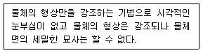
- 스파클 기법
- 실루엣 기법
- 월 워싱 기법
- 글레이징 기법
(정답률: 90%)
6. 다음 중 단독주택에서 거실의 규모 결정 요소와 가장 거리가 먼 것은?
- 가족수
- 가족구성
- 가구 배치형식
- 전체 주택의 규모
(정답률: 74%)
7. 문(門)에 관한 설명으로 옳지 않은 것은?
- 문의 위치는 가구배치에 영향을 준다.
- 문의 위치는 공간에서의 동선을 결정한다.
- 회전문은 출입하는 사람이 충돌할 위험이 없다는 장점이 있다.
- 미닫이문은 문틀에 경첩을 부착한 것으로 개폐를 위한 면적이 필요하다.
(정답률: 79%)
8. 아일랜드형 부엌에 관한 설명으로 옳지 않은 것은?
- 부엌의 크기에 관계없이 적용이 용이하다.
- 개방성이 큰 만큼 부엌의 청결과 유지관리가 중요하다.
- 가족 구성원 모두가 부엌일에 참여하는 것을 유도할 수 있다.
- 부엌의 작업대가 식당이나 거실 등으로 개방된 형태의 부엌이다.
(정답률: 92%)
9. 점에 관한 설명으로 옳지 않은 것은?
- 많은 점이 같은 조건으로 집결되면 평면감을 준다.
- 두 점의 크기가 같을 때 주의력은 균등하게 작용한다.
- 하나의 점은 관찰자의 시선을 화면 안에 특정한 위치로 이끈다.
- 모든 방향으로 펼쳐진 무한히 넓은 영역이며 면들의 교차에서 나타난다.
(정답률: 79%)
10. 다음 설명에 알맞은 블라인드의 종류는?
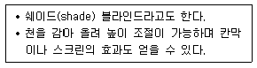
- 롤 블라인드
- 로만 블라인드
- 베니션 블라인드
- 버티컬 블라인드
(정답률: 87%)
11. 상점의 파사드(facade) 구성요소에 속하지 않는 것은?
- 광고판
- 출입구
- 쇼케이스
- 쇼윈도우
(정답률: 69%)
12. 주거공간의 주 행동에 따른 분류에 속하지 않는 것은?
- 개인공간
- 정적공간
- 작업공간
- 사회공간
(정답률: 64%)
13. 다음 설명에 알맞은 건축화조명의 종류는?
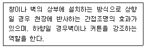
- 광창조명
- 코퍼조명
- 코니스조명
- 밸런스조명
(정답률: 55%)
14. 좁은 공간을 시각적으로 넓게 보이게 하는 방법에 관한 설명으로 옳지 않은 것은?
- 한쪽 벽면 전체에 거울을 부착시키면 공간이 넓게 보인다.
- 가구의 높이를 일정 높이 이하로 낮추면 공간이 넓게 보인다.
- 어둡고 따뜻한 색으로 공간을 구성하면 공간이 넓게 보인다.
- 한정되고 좁은 공간에 소규모의 가구를 놓으면 시각적으로 넓게 보인다.
(정답률: 88%)
15. 스툴(stool)의 종류 중 편안한 휴식을 위해 발을 올려놓는데도 사용되는 것은?
- 세티
- 오토만
- 카우치
- 이지체어
(정답률: 81%)
16. 천장고와 층고에 관한 설명으로 옳은 것은?
- 천장고는 한 층의 높이를 말한다.
- 일반적으로 천장고는 층고보다 작다.
- 한 층의 천장고는 어디서나 동일하다.
- 천장고와 층고는 항상 동일한 의미로 사용된다.
(정답률: 78%)
17. 비정형 균형에 관한 설명으로 옳지 않은 것은?
- 능동의 균형, 비대칭 균형이라고도 한다.
- 대칭 균형보다 자연스러우며 풍부한 개성을 표현할 수 있다.
- 가장 온전한 균형의 상태로 공간에 질서를 주기가 용이하다.
- 물리적으로는 불균형이지만 시각상 힘의 정도에 의해 균형을 이루는 것은 말한다.
(정답률: 78%)
18. ‘루빈의 항아리’와 가장 관련이 깊은 형태의 지각 심리는?
- 그룹핑 법칙
- 역리도형 착시
- 형과 배경의 법칙
- 프래그넌츠의 법칙
(정답률: 80%)
19. 오피스 랜드스케이프에 관한 설명으로 옳지 않은 것은?
- 독립성과 쾌적감의 이점이 있다.
- 밀접한 팀워크가 필요할 때 유리하다.
- 유효면적이 크므로 그만큼 경제적이다.
- 작업패턴의 변화에 따른 조절이 가능하다.
(정답률: 71%)
20. 다음 설명에 알맞은 사무소 건축의 구성 요소는?
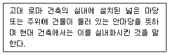
- 몰(mall)
- 코어(core)
- 아트리움(atrium)
- 랜드스케이프(landscape)
(정답률: 75%)
2과목: 색채 및 인간공학
21. 원래의 감각과 반대의 밝기 도는 색상을 가지는 잔상은?
- 정의 잔상
- 양성적 잔상
- 음성적 잔상
- 명도적 잔상
(정답률: 53%)
22. 인간공학에 관한 설명으로 가장 거리가 먼 것은?
- 단일 학문으로서 깊이 있는 분야이므로 다른 학문과는 관련지을 수 없는 독립된 분야이다.
- 체계적으로 인간의 특성에 관한 정보를 연구하고 이들의 정보를 제품 및 환경설계에 이용하고자 노력하는 학문이다.
- 인간이 사용하는 제품이나 환경을 설계하는데 인간의 생리적, 심리적인 면에서의 특징이나 한계점을 체계적으로 응용한다.
- 인간이 사용하는 제품이나 환경을 설계하는데 인간의 특성에 관한 정보를 응용함으로써 안전성, 효율성을 제고하고자하는 학문이다.
(정답률: 82%)
23. 그림과 같은 인간-기계 시스템의 정보 흐름에 있어 빈칸의 (a)와 (b)에 들어갈 용어로 맞는 것은?
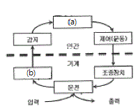
- (a) 표시장치, (b) 정보처리
- (a) 의사결정, (b) 정보저장
- (a) 표시장치, (b) 의사결정
- (a) 정보처리, (b) 표시장치
(정답률: 53%)
24. 표시장치를 디자인할 때 고려해야 할 내용으로 틀린 것은?
- 지시가 변한 것을 쉽게 발견해야 한다.
- 계기는 요구된 방법으로 빨리 읽을 수 있어야 한다.
- 그 계기는 다른 계기와 동일한 모양이어야 한다.
- 제어의 움직임과 계기의 움직임이 직관적으로 알수 있어야 한다.
(정답률: 84%)
25. 인간의 청각을 고려한 신호 표현을 구상할 때의 내용으로 틀린 것은?
- 청각으로 과부하 되지 않게 한다.
- 지나치게 고강도의 신호를 피한다.
- 지속적인 신호로 인지할 수 있게 한다.
- 주변 소음 수준에 상대적인 세기로 설정한다.
(정답률: 59%)
26. 피로조사의 목적과 가장 거리가 먼 것은?
- 작업자의 건강관리
- 작업자 능력의 우열평가
- 작업조건, 근무제의 개선
- 노동부담의 평가와 적정화
(정답률: 84%)
27. 일반적으로 관찰되는 인체 측정자료의 분포곡선으로 맞은 것은?
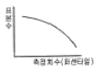
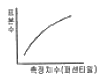
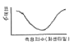
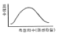
(정답률: 70%)
28. 음압수준(sound pressure level)을 산출하는 식으로 맞는 것은? (단, P0은 기준음압, P1은 주어진 음압을 의미한다.)
- dB수준 =
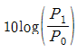
- dB수준 =
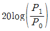
- dB수준 =
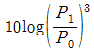
- dB수준 =
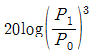
(정답률: 58%)
29. 단위시간에 어떤 방향으로 발산되고 있는 빛의 양은?
- 광도
- 광량
- 광속
- 휘도
(정답률: 50%)
30. 인간이 수행하는 작업의 노동 강도를 나타내는 것은?
- 인간생산성
- 에너지소비량
- 기초대사율
- 노동능력 대사율
(정답률: 70%)
31. 색채조화 이론에서 보색조화와 유사색조화 이론과 관계 있는 사람은?
- 슈브뢸(M.E.Chevreul)
- 베졸드(Bezold)
- 브뤼케(Brucke)
- 럼포드(Rumford)
(정답률: 62%)
32. 색의 요소 중 시각적인 감각이 가장 예민한 것은?
- 색상
- 명도
- 채도
- 순도
(정답률: 46%)
33. 1950년에 색상, 명도, 채도의 3속성에 기반 한 색채분류 척도를 고안한 미국의 화가이자 미술 교사였던 사람은?
- 오스트발트
- 헤링
- 먼셀
- 저드
(정답률: 64%)
34. 다음 보기 중에서 주로 명도와 가장 상관관계가 높은 것은?
- 온도감
- 중량감
- 강약감
- 경연감
(정답률: 72%)
35. KS(한국산업표준)의 색명에 대한 설명이 틀린 것은?
- KS A 0011에 명시되어 있다.
- 색명은 계통색명만 사용한다.
- 유채색의 기본색이름은 빨강, 주황, 노랑, 연두, 초록, 청록, 파랑, 남색, 보라, 자주, 분홍, 갈색이다.
- 계통색명은 무채색과 유채색 이름으로 구분한다.
(정답률: 62%)
36. 색의 온도감에 대한 설명 중 틀린 것은?
- 색의 온도감은 대상에 대한 연상작용과 관계가 있다.
- 난색은 일반적으로 포근, 유쾌, 만족감을 느끼게 하는 색채이다.
- 녹색, 자색, 적자색, 청자색 등은 중성색이다.
- 한색은 일반적으로 수축, 후퇴의 성질을 가지고 있다.
(정답률: 65%)
37. 제품색채 설계 시 고려해야 할 사항으로 옳은 것은?
- 내용물의 특성을 고려하여 정확하고 효과적인 제품색채 설계를 해야 한다.
- 전달되는 표면색채의 질감 및 마감처리에 의한 색채 정보는 고려하지 않아도 된다.
- 상징적 심벌은 동양이나 서양이나 반드시 유사하므로 단일 색채를 설계해도 무방하다.
- 스포츠 팀의 색채는 지역과 기업을 상징하기에 보다 배타적으로 설계를 고려하여야 한다.
(정답률: 74%)
38. 먼셀 표색계에서 정의한 5개의 기본 색상 중에 해당되지 않는 것은?
- 빨강
- 보라
- 파랑
- 주황
(정답률: 76%)
39. 다음 중 유사색상의 배색은?
- 빨강 – 노랑
- 연두 – 녹색
- 흰색 – 흑색
- 검정 – 파랑
(정답률: 83%)
40. 문∙스펜서의 색채조화론에 대한 설명 중 틀린 것은?
- 먼셀 표색계로 설명이 가능하다.
- 정량적으로 표현 가능하다.
- 오메가 공간으로 설정되어 있다.
- 색채의 면적관계를 고려하지 않았다.
(정답률: 73%)
3과목: 건축재료
41. 카세인 주원료에 해당하는 것은?
- 소, 돼지 등의 혈액
- 녹말
- 우유
- 소, 말 등의 가죽이나 뼈
(정답률: 62%)
42. 석고보드에 관한 설명으로 옳지 않은 것은?
- 방수, 방회 등 용도별 성능을 갖도록 제작할 수 있다.
- 벽, 천장, 칸막이 등에 합판대용으로 주로 사용된다.
- 내수성, 내충격성은 매우 강하나 단열성, 차음성이 부족하다.
- 주원료인 소석고에 혼화제를 넣고 물로 반죽한 후 2장의 강인한 보드용 원지 사이에 채워 넣어 만든다.
(정답률: 73%)
43. 2장 이상의 판유리 사이에 접착성이 강한 플라스틱 필름을 삽입하고 고열∙고압으로 처리한 유리는?
- 강화유리
- 복층유리
- 망입유리
- 접합유리
(정답률: 63%)
44. 석재의 일반적인 특징에 관한 설명으로 옳지 않은 것은?
- 내구성, 내화학성, 내마모성이 우수하다.
- 외관이 장중하고, 석질이 치밀한 것을 갈면 미려한 광택이 난다.
- 압축강도에 비해 인장강도가 작다.
- 가공성이 좋으며 장대재를 얻기 용이하다.
(정답률: 72%)
45. 인조석 등 2차 제품의 제작이나 타일의 줄눈 등에 사용하는 시멘트는?
- 백색 포틀랜드 시멘트
- 초조강 포틀랜드 시멘트
- 중용열 포틀랜드 시멘트
- 알루미나 시멘트
(정답률: 78%)
46. 콘크리트 슬럼프용 시험기구에 해당되지 않는 것은?
- 수밀평판
- 압력계
- 슬럼프콘
- 다짐봉
(정답률: 51%)
47. 단열재에 관한 설명으로 옳지 않은 것은?
- 유리면 – 유리섬유를 이용하여 만든 제품으로서 유리솜 또는 글라스울이라고 한다.
- 암면 – 상온에서 열전도율이 낮은 장점을 가지고 있으며 철골 내화피복재로서 많이 이용된다.
- 석면 – 불연성, 보온성이 우수하고 습기에서 강하여 사용이 적극 권장되고 있다.
- 펄라이트 보온재 –경량이며 수분침투에 대한 저항성이 있어 배관용의 단열재로 사용된다.
(정답률: 62%)
48. 전건(全乾)목재의 비중이 0.4일 때, 이 전건(全乾)목재의 공극율은?
- 26%
- 36%
- 64%
- 74%
(정답률: 38%)
49. 다음 철물 중 창호용이 아닌 것은?
- 안장쇠
- 크레센트
- 도어체인
- 플로어힌지
(정답률: 47%)
50. 실외 조적공사 시 조적조의 백화현상 방지법으로 옳지 않은 것은?
- 우천시에는 조적을 금지한다.
- 가용성 염류가 포함되어 있는 해사를 사용한다.
- 줄눈용 모르타르에 방수제를 섞어서 사용하거나, 흡수율이 적은 벽돌을 선택한다.
- 내벽과 외벽사이 조적하단부와 상단부에 통풍구를 만들어 통풍을 통한 건조상태를 유지한다.
(정답률: 72%)
51. 석탄산과 포르말린의 축합반응에 의하여 얻어지는 합성수지로서 전기절연성, 내수성이 우수하며 덕트, 파이프, 접착제, 배전판 등에 사용되는 열경화성 합성수지는?
- 페놀수지
- 염화비닐수지
- 아크릴수지
- 불소수지
(정답률: 58%)
52. 유리에 관한 설명으로 옳지 않은 것은?
- 강화유리는 보통유리보다 3~5배정도 내충격 강도가 크다.
- 망입유리는 도난 및 화재 확산방지 등에 사용된다.
- 복층유리는 방음, 방서, 단열효과가 크고 결로 방지용으로도 우수하다.
- 판유리 중 두께 6mm이하의 얇은 판유리를 후판유리라고 한다.
(정답률: 71%)
53. 스트레이트 아스팔트(A)와 블로운 아스팔트(B)의 성질을 비교한 것으로 옳지 않은 것은?
- 신도는 A가 B보다 크다.
- 연화점은 B가 A보다 크다.
- 감온성은 A가 B보다 크다.
- 접착성은 B가 A보다 크다.
(정답률: 45%)
54. 금속면의 화학적 표면처리재용 도장재로 가장 적합한 것은?
- 셀락니스
- 에칭프라이머
- 크레오소트유
- 캐슈
(정답률: 62%)
55. 각 합성수지와 이를 활용한 제품의 조합으로 옳지 않은 것은?
- 멜라민수지 –천장판
- 아크릴수지 –채광판
- 폴리에스테르수지 –유리
- 폴리스티렌수지 –발포보온판
(정답률: 53%)
56. 목재 섬유포화점에서의 함수율은 약 몇 %인가?
- 20%
- 30%
- 40%
- 50%
(정답률: 76%)
57. 속빈 콘크리트 블록(KS F 4002)의 성능을 평가하는 시험 항목과 거리가 먼 것은?
- 기건 비중 시험
- 전 단면적에 대한 압축강도 시험
- 내충격성 시험
- 흡수율 시험
(정답률: 49%)
58. 미장재료의 종류와 특성에 관한 설명으로 옳지 않은 것은?
- 시멘트 모르타르는 시멘트 결합재로 하고 모래를 골재로 하여 이를 물과 혼합하여 사용하는 수경성 미장재료이다.
- 테라조 현장바름은 주로 바닥에 쓰이고 벽에는 공장제품테라조판을 붙인다.
- 소석회는 돌로마이트 플라스터에 비해 점성이 높고, 작업성이 좋기 때문에 풀을 필요로 하지 않는다.
- 석고플라스터는 경화∙건조시 치수안정성이 우수하며 내화성이 높다.
(정답률: 61%)
59. 점토의 물리적 성질에 관한 설명으로 옳지 않은 것은?
- 비중은 불순한 점토 일수록 낮다.
- 점토입자가 미세할수록 가소성은 좋아진다.
- 인장강도는 압축강도의 약 10배이다.
- 비중은 약 2.5~2.6 정도이다.
(정답률: 58%)
60. 시멘트의 수화열을 저감시킬 목적으로 제조한 시멘트로 매스콘크리트용으로 사용되며, 건조수축이 적고 화학저항성이 일반적으로 큰 것은?
- 조강 포틀랜드시멘트
- 중용열 포틀랜드시멘트
- 실리카 시멘트
- 알루미나 시멘트
(정답률: 59%)
4과목: 건축일반
61. 익공계 양식에 관한 설명으로 옳지 않은 것은?
- 조선시대초 우리나라에서 독자적으로 발전된 공포양식이다.
- 향교, 서원, 사당 등 유교건축물에서 주로 사용되었다.
- 봉정사 극락전이 대표적인 건축물이다.
- 주심포 양식이 단순화되고 간략화된 형태이다.
(정답률: 58%)
62. 실내음향의 상태를 표현하는 요소와 가장 거리가 먼 것은?
- 명료도
- 잔향시간
- 음압분포
- 투과손실
(정답률: 59%)
63. 다음과 같은 조건에서 겨울철 벽체내부에 발생하는 결로 현상에 관한 설명으로 옳은 것은?
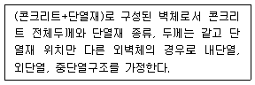
- 내단열 구조의 경우가 내부결로의 발생우려가 가장 적다.
- 외단열구조의 경우가 내부결로의 발생우려가 가장 적다.
- 중단열구조의 경우가 내부결로의 발생우려가 가장 적다.
- 두께가 같으면 내부결로의 발생정도는 동일하다.
(정답률: 57%)
64. 지하층의 비상탈출구에 관한 기준으로 옳지 않은 것은?
- 비상탈출구의 유효너비는 0.75m 이상으로 하고, 유효높이는 1.5m 이상으로 할 것
- 비상탈출구의 진입부분 및 피난통로에는 통행에 지장이 있는 물건을 방치하거나 시설물을 설치하지 아니할 것
- 비상탈출구의 문은 피난방향으로 열리도록하고, 실내에서 항상 열 수 있는 구조로 하여야 하며, 내부 및 외부에는 비상탈출구의 표시를 할 것
- 비상탈출구는 출입구로부터 3m 이내에 설치할 것
(정답률: 55%)
65. 건축구조물을 건식구조와 습식구조로 구분할 때 건식구조에 속하는 것은?
- 철골철근콘크리트구조
- 블록구조
- 철근콘크리트 구조
- 철골구조
(정답률: 60%)
66. 다음 중 경보설비에 포함되지 않는 것은?
- 자동화재속보설비
- 비상조명등
- 비상방송설비
- 누전경보기
(정답률: 71%)
67. 로마네스크 건축양식에 해당하는 것은?
- 피사 대성당
- 솔즈베리 대성당
- 파르테논신전
- 노트르담사원
(정답률: 48%)
68. 방염성능기준 이상의 실내장식물 등을 설치하여야 하는 특정소방대상물에 해당하는 것은?
- 12층인 아파트
- 건축물의 옥내에 있는 운동시설 중 수영장
- 옥외 운동시설
- 방송통신시설 중 방송국
(정답률: 63%)
69. 다음 소방시설 중 소화설비에 속하지 않는 것은?
- 상수도소화용수설비
- 소화기구
- 옥내소화전설비
- 스프링쿨러설비등
(정답률: 73%)
70. 건축허가 등을 할 때 미리 소방본부장 또는 소방서장의 동의를 받아야 하는 건축물의 연면적 기준으로 옳은 것은?
- 200m2 이상
- 300m2 이상
- 400m2 이상
- 500m2 이상
(정답률: 58%)
71. 자동화재탐지설비를 설치하여야 특정소방대상물이 되기위한 근린생활시설(목욕장은 제외)의 연면적 기준으로 옳은 것은?
- 600m2 이상인 것
- 800m2 이상인 것
- 1,000m2 이상인 것
- 1,200m2 이상인 것
(정답률: 35%)
72. 소방안전관리보조사를 두어야 하는 특정소방대상물에 포함되는 아파트는 최소 몇 세대 이상의 조건을 갖추어야 하는가?
- 200세대 이상
- 300세대 이상
- 400세대 이상
- 500세대 이상
(정답률: 61%)
73. 배연설비의 설치기준으로 옳지 않은 것은?
- 건축물이 방화구획으로 구획된 경우에는 그 구획마다 1개소 이상의 배연창을 설치하되, 배연창의 상변과 천장 또는 반자로부터 수직거리가 1.2m 이내일 것
- 배연구는 예비전원에 의하여 열 수 있도록 할 것
- 배연창 설치에 있어 반자높이가 바닥으로부터 3m 이상인 경우에는 배연창의 하변이 바닥으로부터 2.1m 이상의 위치에 놓이도록 설치할 것
- 배연구는 연기감지기 또는 열감지기에 의하여 자동으로 열 수 있는 구조로 하되, 손으로도 열고 닫을 수 있도록할 것
(정답률: 41%)
74. 공동주택과 오피스텔의 난방설비를 개별난방방식으로 할 경우 설치기준으로 옳지 않은 것은?
- 보일러실과 거실사이의 출입구는 그 출입구가 닫힌 경우에도 보일러가스가 거실에 들어갈 수 없는 구조로 할 것
- 보일러실의 윗부분에는 그 면적이 0.5m 이상인 환기창을 설치하고, 보일러실의 윗부분과 아랫부분에는 각각 지름 10cm 이상의 공기흡입구 및 배기구를 항상 열려있는 상태로 바깥공기에 접하도록 설치할 것(단, 전기보일러실의 경우는 예외)
- 보일러는 거실외의 곳에 설치하며 보일러를 설치하는 곳과 거실사이의 경계벽은 출입구를 포함하여 내화구조로 구획할 것
- 기름보일러를 설치하는 경우에는 기름저장소를 보일러실 외의 다른 곳에 설치할 것
(정답률: 61%)
75. 호텔 각 실의 재료 중 방염성능기준 이상의 물품으로 시공하지 않아도 되는 것은?
- 지하 1층 연회장의 무대용 합판
- 최상층 식당의 창문에 설치하는 커튼류
- 지상 1층 라운지의 전시용 합판
- 지상 3층 객실의 화장대
(정답률: 70%)
76. 41층의 업무시설을 건축하는 경우에 6층 이상의 거실면적 합계가 30,000m2 이다. 15인승 승용승강기를 설치하는 경우에 최소 몇 대가 필요한가?
- 11대
- 12대
- 14대
- 15대
(정답률: 46%)
77. 벽돌벽에 장식적으로 여러 모양의 구멍을 내어 쌓는 방식을 무엇이라 하는가?
- 영식쌓기
- 영롱쌓기
- 불식쌓기
- 공간쌓기
(정답률: 66%)
78. 다음은 건축물의 최하층에 있는 거실(바닥이 목조인 경우)의 방습 조치에 관한 규정이다. ( )안에 들어갈 내용으로 옳은 것은?
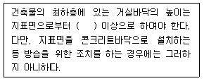
- 30cm
- 45cm
- 60cm
- 75cm
(정답률: 49%)
79. 철골구조에 관한 설명으로 옳지 않은 것은?
- 장스팬을 요하는 구조물에 적합하다.
- 컬럼쇼트닝 현상이 발생할 수 있다.
- 사용성에 있어 진동의 영향을 받지 않는다.
- 철근콘크리트조에 비하여 경량이다.
(정답률: 67%)
80. 단독주택의 거실에 있어 거실 바닥면적에 대한 채광면적(채광을 위하여 거실에 설치하는 창문등의 면적)의 비율로서 옳은 것은?
- 1/7 이상
- 1/10 이상
- 1/15 이상
- 1/20 이상
(정답률: 74%)
기능적 조건은 공간의 사용 목적에 따라 필요한 기능을 충족시키는 것을 말하며, 정서적 조건은 공간이 주는 감성적인 인상을 말합니다.
경험적 조건은 사용자의 경험과 관련된 조건으로, 공간이 사용자에게 어떤 경험을 제공하는지를 고려합니다. 예를 들어, 공간에서 느껴지는 색감, 조명, 소리, 냄새 등이 사용자의 경험을 좌우합니다.
반면에 환경적 조건은 공간의 주변 환경과 관련된 조건으로, 자연환경, 도시환경, 기후 등이 해당됩니다. 이러한 조건은 실내디자인에서는 제한적으로 고려되기도 합니다.
따라서, 실내디자인에서 경험적 조건은 매우 중요한 역할을 합니다.